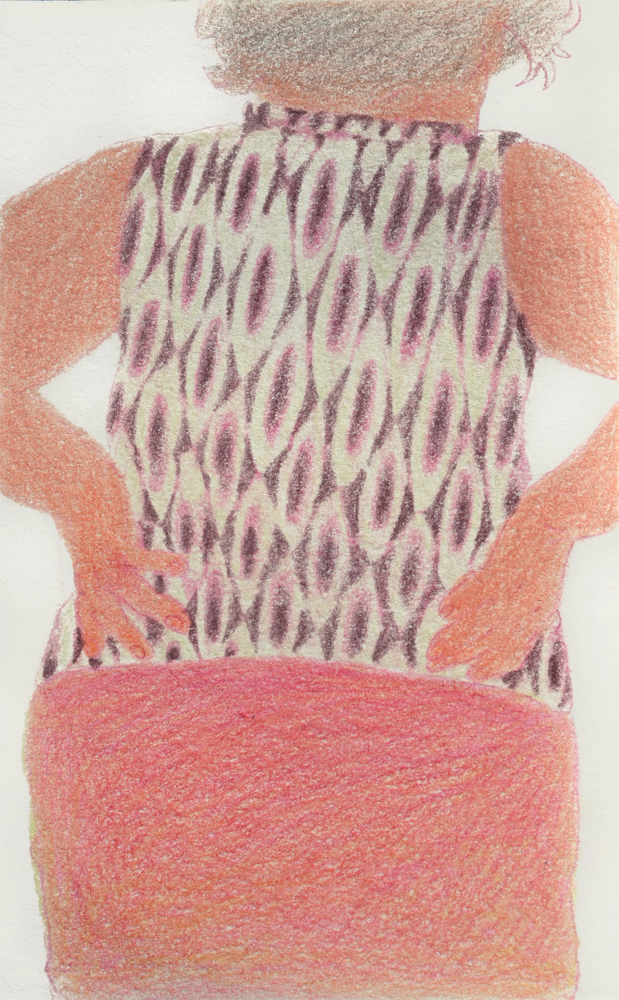

신기하다신기해엄지우는 수수께끼같은 사람이나 미지의 공간처럼 우리의 이해가 완벽하게 닿을 수 없는 것들을 그림 속으로 옮겨 일종의 미스터리를 연출한다. 그는 경험된 것을 끌어들이지만 익숙하고 일상적인 단서로는 쉽게 파악할 수 없는 세계를 구축한다.
암시를 제공하면서도 모든 정황을 명확히 설명하지 않고, 인물을 조형 요소로 다루며 능동적으로 상황을 이끌지 않는 무기력한 대상처럼 보이도록 만든다. 그렇게 그려진 이미지는 견고한 구조를 지니기보다는 마치 이야기의 파편처럼 비밀스러운 상태가 된다. 그 이상을 들추어 분명한 정체를 가늠하는 대신 관망하는 자로 머물며 미결의 장면으로 남긴다.